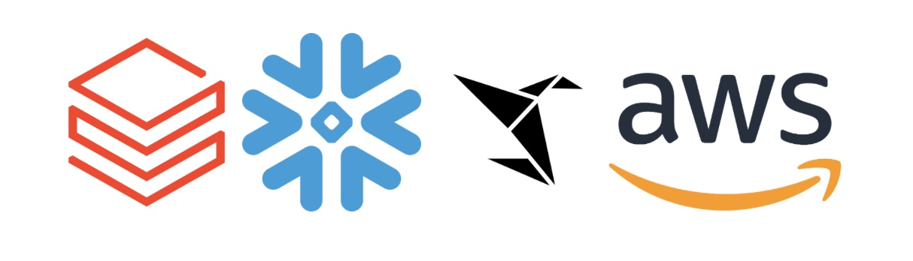

Accreditations
Over the past few months, I've upskilled across several technologypartners and platforms, including Databricks, Snowflake, Sigma, and Amazon Web Services.


I completed Snowflake's Intro to Snowflake for Devs, Data Scientists, Data Engineers course, building a solid foundation in Snowflake as a cloud data platform — from core objects like warehouses, databases, and schemas to more advanced features like time travel, cloning, and Snowpark. I got hands-on with all four of Snowflake's core workloads: ingesting streaming data with Snowpipe, using Cortex LLM functions for generative AI, building an ML model with Snowpark, and running a Streamlit app — giving me a practical, end-to-end understanding of Snowflake that's directly relevant to the pipeline work I do at Kubrick.
Sigma's Partner Delivery Fundamentals training, covered core analytics fundamentals on Sigma's platform and how it connects directly to underlying data sources to power AI apps and governed analytics. I worked through hands-on exercises covering Sigma's architecture, data modeling, visualization, and metrics, building the practical skills to create and deliver analytics solutions on the platform.
I earned the Databricks Certified Data Engineer Associate certification, demonstrating my ability to use the Databricks Data Intelligence Platform to complete foundational data engineering tasks on a modern lakehouse. The certification covers the Databricks Lakehouse Platform and its architecture, building ETL pipelines with Spark SQL and PySpark, processing data incrementally across batch and streaming workflows, orchestrating and productionising pipelines with Databricks workflows, and applying data governance and security through Unity Catalog. It gave me hands-on grounding in Delta Lake, Spark, and Databricks-native tooling — skills I bring directly into the pipeline and data platform work I do at Kubrick.
I earned the AWS Certified AI Practitioner certification, demonstrating a foundational understanding of AI, machine learning, and generative AI concepts, along with practical, responsible use of AWS AI tools to solve business problems. The certification covers the fundamentals of AI and ML, core generative AI concepts, applications of foundation models using AWS services like Amazon Bedrock and SageMaker, guidelines for responsible AI, and security, compliance, and governance for AI solutions. It gave me a solid grounding in how AI and GenAI technologies fit into real-world business use cases — complementing the data engineering work I do at Kubrick by helping me understand how the pipelines I build feed into AI-driven applications downstream.
I completed Snowflake's Hands-On Essentials: Data Warehousing Workshop, an interactive, lab-based badge designed for those new to Snowflake or databases in general, combining reflection questions with hands-on lab work and automated checks.
Through the workshop, I demonstrated the ability to create, edit, and load Snowflake tables, create and use file formats and compute resources (warehouses), write and use COPY INTO statements, and transform, parse, and load both CSV and JSON data.
It gave me practical, applied experience with Snowflake's core data warehousing capabilities, building directly on the fundamentals I brought in from my Intro to Snowflake course and reinforcing the pipeline and data-loading work I do at Kubrick.
I completed Snowflake's Hands-On Essentials: Collaboration, Marketplace & Cost Estimation Workshop, the second badge in the series, building on the fundamentals from the Data Warehousing Workshop. This tested my ability to manage and create listings via Provider Studio, use direct and inbound data shares, estimate and monitor Snowflake costs, and apply the Marketplace and collaboration tools to cut costs and improve operational efficiency — all without step-by-step guidance, applying previously learned concepts independently to new tasks. It sharpened my understanding of how data sharing and cost management work in practice on Snowflake, skills that translate directly into being a more cost-conscious and collaborative data engineer at Kubrick.
Successfully completed this course, strengthening my knowledge and practical skills in Databricks SQL, data management, Unity Catalog, query optimization, dashboards, visualizations, and AI/BI Genie. This certification enhanced my ability to analyse data, generate meaningful insights, and apply Databricks tools effectively for data-driven decision-making.